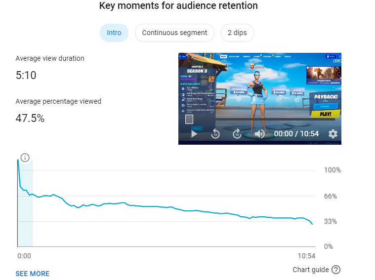

Watch Time
What Is It And How Do You Make It Better?
Watch time (in my opinion) is pretty self explanatory. It is how long a user watches your video. Youtube displays this statistic in 2 different ways: Watch Time and Audience Retention. Watch time is the average duration that people watch your videos in a minute display. For example, the average Audience Retention on my videos is 50%, so that would be 5:00 on a 10:00 video. Audience Retention is the % of the video that people watch, displaying a graph when people click off. This graph helps determine which parts of the video are boring and that you could improve on. Youtube seems to like when the graph is straight the whole way through, with no dips. You need to capture the viewers attention and keep it throughout the entire video. There are so many ways to increase watch time. It is imporant to note that youtube's algorithm is centered around keeping you on the site for as long as possible, so a 30 second video, which will likely have a 100% retention, will not get promoted as much as a 30 minute video with a 50% retention. Personally, I barely do an intro, as that is where you see the biggest drop. I try to get into to video straight away. Throughout the entire video, I attempt to keep it entertaining by adding zooms almost every cut, subtitles at the appropriate places, and cutting the footage up just right. Finally, the outro needs to be quick, 3-5 seconds, to not give people a change to click off. Putting all of these together, you can hopefully get a good watch time on your video. Here is a picture of the watch time graph on my most viewed video (the more impressions a video gets, the lower the metrics are).
